AI Academy · Level 2 · Grade 7 · Week 19 · Student lesson
Sampling and Representation
Learn to understand, design, build, test and explain AI systems responsibly.
Project: Transparent Book Recommender
Before you start
AI-1 Week 22: repeated examples do not add representative variety.
Plan time to read, investigate and explain. Keep predictions separate from observations.
Student lesson · 1 of 18
Your mission
Start with the target: Define a question and target population. Try the recall before opening notes.
Your learning target
I can define a question and target population.
I can describe how a sample was selected.
I can limit conclusions to supported groups.
Remember before reading
Close your notes first. A rough first answer helps us choose the right starting point; it is not a score for your ability.
Without opening the old lesson, explain one key idea from Missing Data. Give an example and a mistake that the idea helps you avoid.
Without opening the old lesson, explain one key idea from Overfitting Intuition. Give an example and a mistake that the idea helps you avoid.
Without opening the old lesson, explain one key idea from Types of Classification Error. Give an example and a mistake that the idea helps you avoid.
After trying, check the relevant lesson or ask your teacher. Change the part of your explanation that the evidence shows was wrong.
Week 19: Sampling and Representation
A sample must reflect the people and situations where the system will be used.
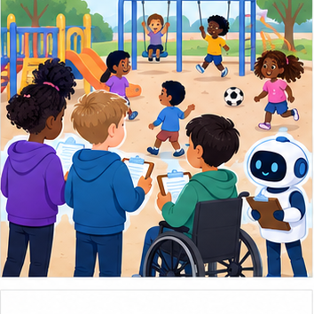
THINKER MISSION
Audit a playground survey collected from one class.
Thinker name and date:
Readiness for the connected explanation
If 6 of 10 responses choose Reading, what is the observed proportion?
Readiness for Graphs and honest scales
Counts are 8 and 10. What is their absolute difference?
This week’s end goal
By the end, I can define a population, selection frame and nonresponse report for a survey.
Student lesson · 2 of 18
Notice the evidence
Investigate the supplied Sampling and Representation case. Separate observations, given facts and assumptions before choosing an explanation.
PICTURE STORY
Notice → Predict → Explain
Begin with visible evidence. Do not explain more than the picture and information support.
Start with this puzzle
MYSTERY
The learners must use sampling and representation to solve a problem. What information do they have? What decision or calculation do they make? What would count as evidence that it worked?
Three observations (what you can point to):
My prediction and the clue supporting it:
A closer explanation
A fictional school wants to know which activity Grade 7 students prefer. Surveying only the coding club is easy, but the question concerns every Grade 7 student.
First define the population, selection process, question and response options. No real student data is required for this exercise.
Apply the connected idea: Graphs and honest scales
A fictional poll records 8 votes for Drawing and 10 for Building. A bar chart should make lengths proportional to counts, starting at zero.
A chart starting at 7 makes the visible bars 1 and 3 units tall and can exaggerate the difference.
Student lesson · 3 of 18
See how it works
Follow the mechanism for Sampling and Representation. Connect each labelled input, deciding step and result.
VISUAL MECHANISM
Input → Process → Output
Trace the information. At each stage, ask what changed and how you could test it.
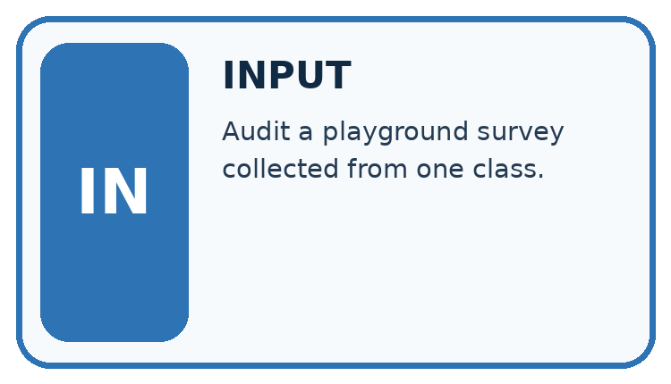
↓
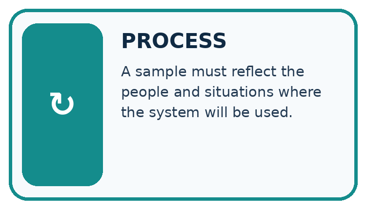
↓
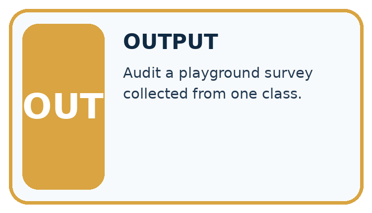
Which stage could fail even when the other two are correct? Explain:
A closer explanation
rows = [{"group": "club", "choice": "Code"},
{"group": "club", "choice": "Read"},
{"group": "club", "choice": "Code"}]
code_votes = 0
for row in rows:
if row["choice"] == "Code":
code_votes = code_votes + 1
print(code_votes, len(rows))Follow the evidence
The result 2 of 3 describes these fictional club responses. It cannot by itself estimate the whole grade reliably. A better plan starts from a complete grade roster, uses a fair selection method and records nonresponse.
Random selection gives each listed student a chance; it does not guarantee every small sample is representative.
Match the people to the question
The population is everyone the question concerns. The sample is the smaller group whose responses you actually collect.
If the question is about all Grade 7 students, a coding-club sample leaves other students out before the poll even starts. Separate the invitation process from the response process: some invited students may not reply.
A report needs both counts so readers can see whose preferences might be missing.
Apply the connected idea: Graphs and honest scales
counts = {"Drawing": 8, "Building": 10}
for label in counts:
print(label, "#" * counts[label], counts[label])Follow the evidence
The text chart uses one # per vote and a zero baseline. The second category has 2 more votes and 1.25 times as many votes, not three times as many.
Include the poll question, date or collection occasion and number of responses when presenting a real graph.
Make bar lengths mean something
With a zero baseline, eight votes make a bar eight units high and ten votes make a bar ten units high. The difference is two votes.
If the drawing begins at seven, only the extra one and three units are visible, making the second bar look three times as tall. That picture describes the part above seven, not the full counts.
Use one scale, label the units and show the counts.
Connect the picture and the explanation
Point to the input, the deciding step and the result in this week’s visual. Explain the same step in ordinary words. A picture helps when you can say what each part represents.
Student lesson · 4 of 18
Compare the cases
Compare the supplied cases for Sampling and Representation. Identify the detail that changes the conclusion.
The case to investigate
CASE GALLERY
Four Tests, Four Kinds of Evidence
A system is not understood until it survives more than one comfortable example.


The normal case
NORMAL CASE: predict and name evidence. BOUNDARY CASE: predict and name evidence.


Check missing information
MISSING INFORMATION: predict and name evidence. TRANSFER CASE: predict and name evidence.
Which case is most likely to reveal a hidden assumption? Why?
Change one thing in the pictured case
Change one thing
Change: Invite only the 15 library-club members instead.
Predicted result
Prediction: The invitation process no longer covers the whole grade through this frame.
Why the result follows
Reason: Club members may differ in reading interests; selection is now limited to one group.
Student lesson · 5 of 18
Words that unlock the idea
Use the vocabulary of Sampling and Representation to explain a concrete decision, rather than only memorising definitions.
VOCABULARY LAB
Words You Can Use to Reason
A definition matters when you can recognize the idea, use it, and contrast it with a near-miss.
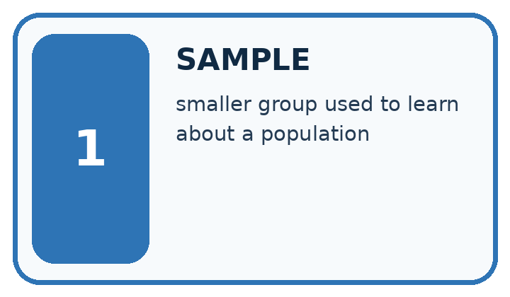
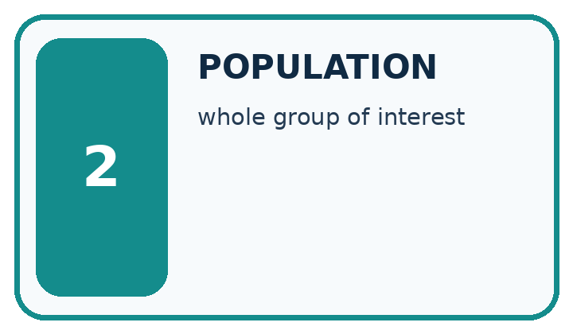
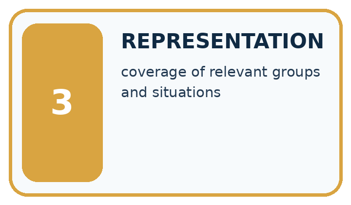
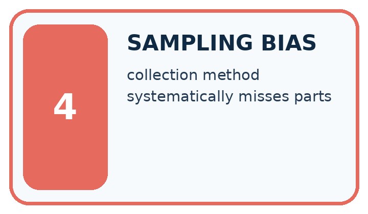
| Word | My own example | Not this / boundary |
|---|---|---|
| sample | A selected group of observations, or an outcome drawn from a distribution; the context identifies which meaning applies. | |
| population | The full group of cases or people a study aims to describe. | |
| representation | A way to encode information so a person or system can work with it. | |
| sampling bias | A systematic mismatch between selected examples and the population the study intends to describe. |
Words used in the closer explanation
| Word | Meaning |
|---|---|
| Sampling frame | The list or source from which a sample is selected |
| Response | A recorded answer from a selected participant |
Terms for Graphs and honest scales
| Term | Meaning |
|---|---|
| Axis | A reference line with a scale on a graph |
| Baseline | The starting reference value on a scale |
| Bar chart | A graph using bar lengths to compare categories |
| Scale | The mapping from values to positions or lengths |
Student lesson · 6 of 18
Follow a worked example
Follow the worked trace for Sampling and Representation, predict a step, then compare with its explanation.
WORKED EVIDENCE
Reason Step by Step
Predict first. Then check each step. A correct answer without visible reasoning is incomplete evidence.
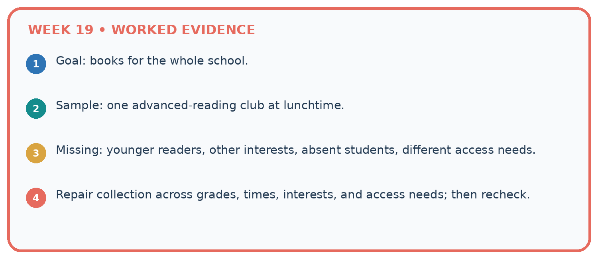
1. Goal: books for the whole school.
2. Sample: one advanced-reading club at lunchtime.
3. Missing: younger readers, other interests, absent students, different access needs.
4. Repair collection across grades, times, interests, and access needs; then recheck.
Recalculate, retrace, or restate the reasoning in your own representation:
CHECK Did the evidence answer the exact question? Did the total, path, or source record stay consistent?
A closer explanation
Apply the connected idea: Graphs and honest scales
Learn from the worked case
Cover the result before checking it. Say what is given, choose the procedure, and follow one step at a time. Then uncover the result and explain your first mismatch. Ask why a step is allowed, not only what number it produces.
A pictorial worked case: Sampling and Representation
A fictional Grade 7 class wants to understand book-format preferences across its whole grade.
The facts we will use
Supplied facts
Population: all 60 Grade 7 learners. Frame: current school-approved list of those 60, used only by the teacher.
Supplied facts
Teacher randomly invites 15; 12 answer the same neutral comic/prose/either question. No names enter the analysis table.

Read the picture one step at a time
Why this result follows
Why the result follows
A sample plan states who could be selected, how selection happens and what happens after invitation. Random invitations do not guarantee that respondents resemble those who declined.
Use a neutral question and preserve nonresponse coverage. Learners can discuss aggregate counts without receiving the identifiable selection frame.
What this example does not establish
Keep the stated limit
Even the random-invitation plan does not remove nonresponse bias or justify revealing identifiable school lists.
Keep the stated limit
Read the labelled picture: Can 80% response be reported as 80% of the whole grade responding?
Keep the stated limit
Change one thing: Invite only the 15 library-club members instead. Predict the result before checking the explanation. What remains the same?
Student lesson · 7 of 18
Find and repair a mistake
Find the unsupported step in the Sampling and Representation claim and explain a repair using the supplied evidence.
Find the first error
ERROR DETECTIVE
Compare → Diagnose → Repair
Do not patch the answer. Find the earliest unsupported assumption, wrong step, or weak evidence.
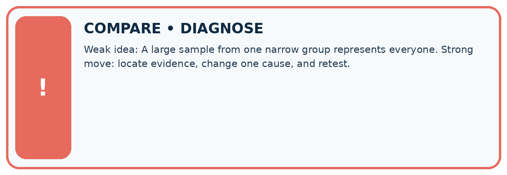
| Evidence record | Expected | Actual | Likely cause / next test |
|---|---|---|---|
| normal case | works | ||
| boundary case | stated rule | ||
| missing input | safe response | ||
| fresh transfer | generalizes |
Repair one cause. Why is this repair better than changing several things?
A closer explanation
Selection and response are separate. Even a fair invitation sample can be distorted if only interested students respond. Report numbers invited and responding and explain who may be absent.
Apply the connected idea: Graphs and honest scales
Counts alone do not show why students chose an activity or whether nonrespondents would choose differently. Graph choices should match the question: categories suit bars; ordered time observations can suit a line.
Student lesson · 8 of 18
Practise together
Practise Sampling and Representation with support, then explain the deciding step in your own words.
LOGIC STUDIO
Trace Before You Run
Block code, pseudocode, tables, and diagrams are different ways to expose the same reasoning.

SET evidence_record PREDICT expected_result RUN one normal case and one boundary case COMPARE actual_result with expected_result IF different: locate first cause; change one factor; RETEST EXPLAIN result, limitation, and next safe step
Trace one input. Which line changes the state or chooses a path?
A closer explanation
Changing the report heading from club responses to all students does not fix sampling. Change the collection plan or narrow the claim.
Avoid collecting names when anonymous counts are sufficient; a teacher can manage selection without publishing identities.
Apply the connected idea: Graphs and honest scales
A graph with bars beginning at 7 turns counts 8 and 10 into visible lengths 1 and 3. Redraw from zero and label counts directly.
A line chart can use a restricted axis for detail if clearly labelled, but it must not disguise its scale.
Practise with less help: Read the sample result
Use workbook W2 for the connected example “Questions populations and samples”. First fill the input and rule boxes. Try the middle steps before asking for a hint. After a hint, try the next step yourself.
| Plan | Do | Check |
|---|---|---|
| What is given? Which rule or procedure applies? | Record each intermediate step. | Does the result follow? What remains unknown? |
Explain your trace to a partner. Your partner points to one step to check. Swap roles on the next case. Each person writes their own explanation.
Check your reasoning
Use the worked case for Questions populations and samples. Proposed explanation: “A successful run proves the conclusion”. Decide whether this explanation is supported.
Point to the step or supplied fact that decides; explain your repair if needed.
Answer on your own before discussion. If you are unsure, say which step you need help with.
Practise the connected topic: Graphs and honest scales
Use its named workbook W2. Identify the given inputs, try the middle steps with less help, then explain your trace. Check this claim before group discussion: A successful run proves the conclusion
Explain the picture
Can 80% response be reported as 80% of the whole grade responding?
This is supported practice. Keep the separately named independent case for an attempt before feedback.
Student lesson · 9 of 18
Run the investigation
Investigate Sampling and Representation. Record the prediction, actual observation or labelled paper trace, explanation and next test separately.
EVIDENCE LAB
Predict → Test → Record → Explain
Keep expected and actual results separate. Surprises are useful data when recorded honestly.
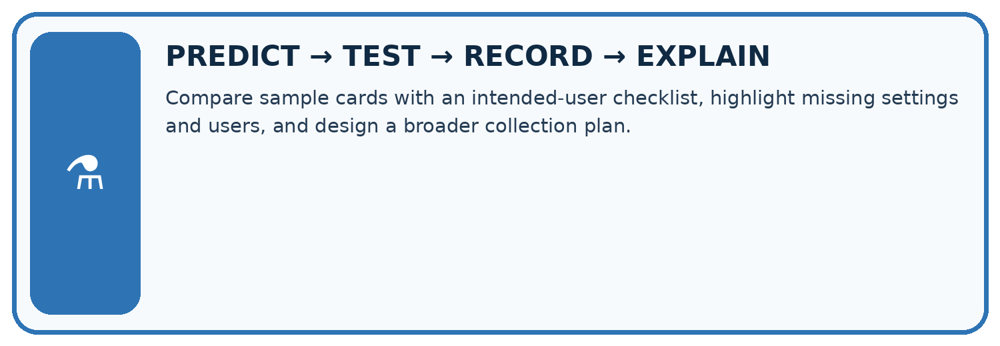
Compare sample cards with an intended-user checklist, highlight missing settings and users, and design a broader collection plan.
| Test / input | Prediction | Actual | Evidence / calculation | Change or keep? |
|---|---|---|---|---|
| normal | ||||
| boundary | ||||
| missing | ||||
| fresh transfer |
What did the hardest test teach you that the normal test did not?
Plan → try → check
Before trying: what do I expect, and why? While trying: which step could first go wrong? Afterwards: what did I actually observe, and what should change? Keep “not run” if you only traced the procedure.
Student lesson · 10 of 18
Build your understanding
Move from recall to tracing, diagnosis and transfer in Sampling and Representation. Explain why each step is justified.
MASTERY
From Knowing the Word to Owning the Idea
Move upward only when you can produce evidence without copying the worked example.

1 • NAME: Define the concept without repeating the textbook.
2 • TRACE: Show the information, state, branch, calculation, or evidence path.
3 • APPLY: Solve a different example independently.
4 • CHALLENGE: Find a boundary case, counterexample, or unfair outcome.
5 • EXPLAIN LIMITS: Say when the result should not be trusted or used alone.
My strongest evidence of independent understanding:
Student lesson · 11 of 18
Connect your project
Apply this week’s idea to Transparent Book Recommender. Keep an annotated decision and the evidence supporting it.
CUMULATIVE PROJECT
Transparent Book Recommender
Every week adds one inspectable piece. The system must show how it reached a result.
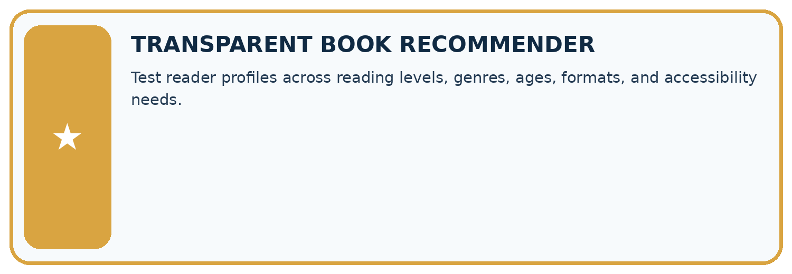
THIS WEEK’S CHECKPOINT Test reader profiles across reading levels, genres, ages, formats, and accessibility needs.
Trace the system
SYSTEM MAP Reader need → allowed inputs → transparent rule or score → ranked candidates → explanation → test record → human decision
What will you add, change, or verify in the project this week?
What should remain under human control?
Responsible design
RESPONSIBLE DESIGN Collect only necessary information. Show uncertainty and limits. Never confuse a ranking with a fact about a person.
Evidence for your project
Document whose requests inform the recommender and avoid treating an easily reached group as all intended users.
Student lesson · 12 of 18
Show what you know
Use a genuinely new case for independent evidence. Previously discussed examples remain practice; use the separately named independent case before feedback.
Independent evidence
INDEPENDENT MASTERY PROOF
Explain • Transfer • Test • Defend
Complete this page without copying the worked example. Your reasoning matters more than decoration.
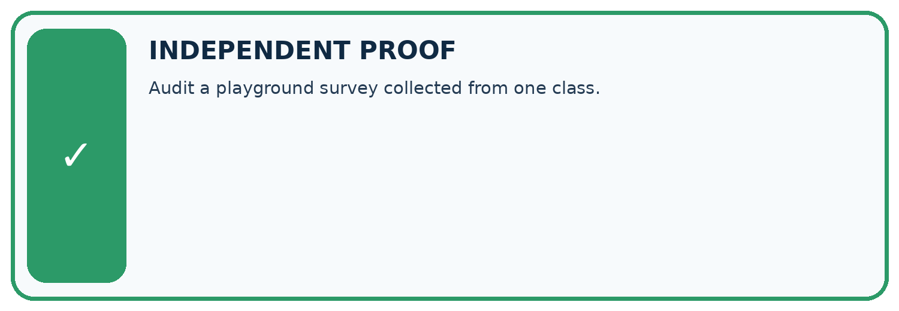
Try a more demanding case
CHALLENGE Audit a playground survey collected from one class.
1. My fresh example, trace, calculation, or design:
2. My evidence that it works (include a boundary or missing-data case):
3. One limitation, fairness concern, or situation needing human review:
Check your explanation
SELF-CHECK □ I explained the mechanism □ I used evidence □ I tested a fresh case □ I named a limitation □ I can answer ‘why?’
Student lesson · 13 of 18
Study a complete case
Revisit the complete Sampling and Representation case for supported practice. Repeated examples do not become fresh assessments.
Week 19 Worked case
Use the supplied details to practise the weekly concept before attempting the independent question. This case extends the illustrated lesson.
The situation
Only adventure-club members answer a school reading survey.
The question
Explain the sampling problem.
Worked explanation
Membership selects for a relevant interest. Include relevant grades and interests with appropriate data practices.
Explain it in your own words
Which detail supports the answer, and why does it matter?
Trace the supplied case visually
Who was left out of the survey?
| Evidence or stage | Value or result |
|---|---|
| Sample | Adventure-club members |
| Intended population | School readers |
| Missing perspectives | Other interests and relevant grades |
Only adventure-club members answer a school reading survey.
Explain the sampling problem.
Membership selects for a relevant interest. Include relevant grades and interests with appropriate data practices.
Student lesson · 14 of 18
Try a new case independently
Attempt the reserved new case before feedback. Record support; the earlier examples below remain additional practice.
Independent case: Plan independently
Design an anonymous sample plan to ask all Grade 7 about three activity choices. State population, sampling frame, selection method, question, and how you will report nonresponse.
Attempt this case before feedback. Record any help. Earlier examples below are further practice; a case already practised with feedback cannot establish fresh transfer.
Week 19 Independent application
Close the worked explanation. Apply the idea to this different question without copying.
You survey only the chess club about all students' favourite books. Identify the sampling limitation and one improvement.
My answer, with a trace, calculation or supporting evidence
Create and test
Change one relevant detail. Predict the result before testing. Include a boundary or missing-information case when it helps reveal a limit.
My changed input and expected result
Connect to your project
Test reader profiles across reading levels, genres, ages, formats, and accessibility needs.
The evidence I will keep
Your teacher has the independent answer and scoring criteria. Complete the matching workbook week to keep your practice evidence together.
Transfer practice from the original programme
A survey about school reading preferences includes only volunteers from a mystery club. Explain why 100 responses may still fail to represent the school. Propose a better sampling plan using fictional data.
Use feedback to improve
Attempt the independent case before hints. Record whether you worked alone, used a hint or followed a model. After feedback, fix the first unsupported step and explain why it changed.
A later check uses a changed case, not a copied answer.
Student lesson · 15 of 18
Your lesson route
Use this map to navigate Sampling and Representation, connect the goals to tasks and keep one evidence record for each attempt.
Start with this question: A fictional Grade 7 class wants to understand book-format preferences across its whole grade.
| By the end, I can | How I will show it |
|---|---|
| Define a question and target population | Explain the deciding step, show a trace or test, and state one limit. |
| Describe how a sample was selected | Explain the deciding step, show a trace or test, and state one limit. |
| Limit conclusions to supported groups | Explain the deciding step, show a trace or test, and state one limit. |
Remember → watch and explain → try with help → investigate → try independently → keep project evidence. Your teacher may spread this lesson across several classes.
Keep your first prediction. Compare it with what the evidence shows and explain any change.
Student lesson · 16 of 18
Finish and return
Explain Sampling and Representation without notes, identify a remaining question and plan a later check with a changed case.
Close your notes. Explain this goal in your own words: Define a question and target population
If you are unsure, return to the worked picture and explain one arrow. If you are ready, change an input or assumption and justify your prediction.
Save your workbook evidence. At the next review, try a different case before opening your old answer.
Student lesson · 17 of 18
Supported practice, repair and portfolio
Attempt supported questions before using hints or feedback. Review a missing building block, then keep the completed work.
Use this supported practice once, in the browser or on paper. Keep the reserved independent assessment for a separate first attempt before teacher feedback.
A fictional Grade 7 class wants to understand book-format preferences across its whole grade.
Practice 1: explain the deciding evidence
Which labelled step matches this detail? Invitation response rate 12/15=80%; preference counts describe respondents.
1. Define target
2. Report scope
3. Record responses
4. Select invitations
Hint · try first
Hint if needed: Read the steps in the pictorial case. Match the supplied detail to the stage that performs or records it.
Feedback · compare after trying
After your attempt, compare with the supported explanation: Report scope Invitation response rate 12/15=80%; preference counts describe respondents.
A sample plan states who could be selected, how selection happens and what happens after invitation. Random invitations do not guarantee that respondents resemble those who declined.
Use a neutral question and preserve nonresponse coverage. Learners can discuss aggregate counts without receiving the identifiable selection frame.
Practice 2: explain the deciding evidence
Changed case · predict first
Changed-case practice: Invite only the 15 library-club members instead. Which conclusion is supported by the supplied facts?
1. This one example guarantees correct results for every future input.
2. The invitation process no longer covers the whole grade through this frame.
3. We can decide the result without examining the changed input or the procedure.
Hint · try first
Hint if needed: Use the changed condition and the deciding step in the pictorial trace. The answer must say what follows from those facts.
Feedback · compare after trying
After your attempt, compare with the supported explanation: The invitation process no longer covers the whole grade through this frame. Club members may differ in reading interests; selection is now limited to one group.
Repair a missing building block
Review Missing Data (ai-2/18). Goal: Detect absent and unusable values. Short practice: Why is the Boolean True rejected even though arithmetic can treat it like 1 in Python?. Return to this week and explain what you changed.
Review Overfitting Intuition (ai-2/16). Goal: Compare training and validation evidence for model capacity. Short practice: Does zero training error justify choosing Complex in the original record?.
Return to this week and explain what you changed.
Review Types of Classification Error (ai-2/13). Goal: Build a labelled confusion matrix from matched reference and prediction pairs. Short practice: Which error causes a sound book to be sent for unnecessary repair review?.
Return to this week and explain what you changed.
Predict, run and debug
The browser lab lets you edit the supported Python examples already included in this lesson. Predict first, run, inspect the actual output or error, change one input, then run again.
Keep code, predictions, actual results and a reasoned revision together. On paper, label your result as a trace rather than an execution.
Keep your completed work
Use Download completed work in the hosted lesson to export your answers, reflections, practice feedback and code-run evidence. Open the HTML copy to read or print it.
Drafts stay in this browser when storage is available; clear drafts on a shared device.
Student lesson · 18 of 18
Visual concept journey
Explain each Sampling and Representation graphic using its labels, deciding evidence and relevant limitation.
01. Sampling and Representation: the case

A fictional Grade 7 class wants to understand book-format preferences across its whole grade. Supplied facts: Population: all 60 Grade 7 learners. Frame: current school-approved list of those 60, used only by the teacher.
Teacher randomly invites 15; 12 answer the same neutral comic/prose/either question. No names enter the analysis table.
Point to the given fact that matters most. Explain why it matters.
02. Follow the deciding steps

Define target: The question concerns all Grade 7, not only library-club members. → Select invitations: Teacher uses the complete approved list and documented random selection. → Record responses: 12 replies from 15 invited; three nonresponses remain visible. → Report scope: Invitation response rate 12/15=80%; preference counts describe respondents.
Point to each numbered stage and explain which recorded input it uses.
03. Follow the evidence

Follow the evidence. Target | All Grade 7 students | Population. Available data | Three club responses | Sample. Observed result | 2 of 3 choose Code | Describes respondents
Read the labels and values. Explain the relationship the model shows.
04. Change one thing. Trace what follows.

Original case: Invitation response rate 12/15=80%; preference counts describe respondents. Changed condition: Invite only the 15 library-club members instead.
Expected result: The invitation process no longer covers the whole grade through this frame. Reason: Club members may differ in reading interests; selection is now limited to one group.
Predict before checking the worked changed-case result. Name what changed and what the supplied facts allow you to conclude.
05. Connect the explanation to its limit

A sample plan states who could be selected, how selection happens and what happens after invitation. Random invitations do not guarantee that respondents resemble those who declined.
Use a neutral question and preserve nonresponse coverage. Learners can discuss aggregate counts without receiving the identifiable selection frame.
Limit: Even the random-invitation plan does not remove nonresponse bias or justify revealing identifiable school lists.
Explain the case, then point to a limit on the claim.
06. Make the idea visible in your project

Document whose requests inform the recommender and avoid treating an easily reached group as all intended users. Draw your input, deciding step, result and limit.
Supported question: Can 80% response be reported as 80% of the whole grade responding?
Draw your project trace and justify the deciding step using evidence.